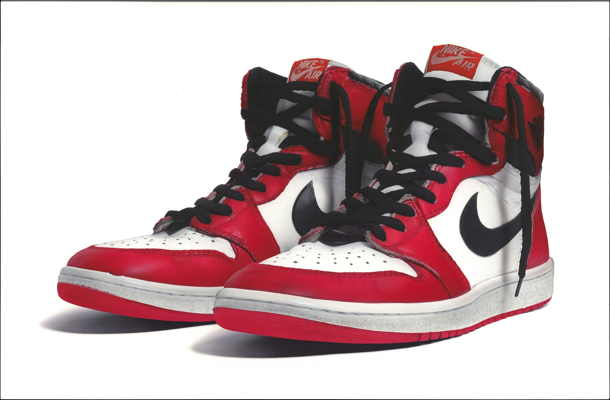

This website is a resource to learn about the history of sneakers and a reference for useful links and information. Included is a series of pages documenting the history of sneakers from the 1980s to the 2010s, a resources page with useful links, and a contact page. Enjoy your stay.
Use the Navigation bar on the left to jump between pages.
